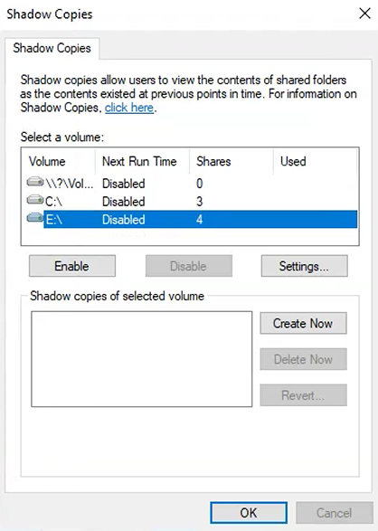

Tutorial – File Server Health Check
This check verifies that Shadow Copies (Previous Versions) are enabled on the File Server volumes.
Shadow Copies allow quick recovery of:
On the File Server:
Verify that:
